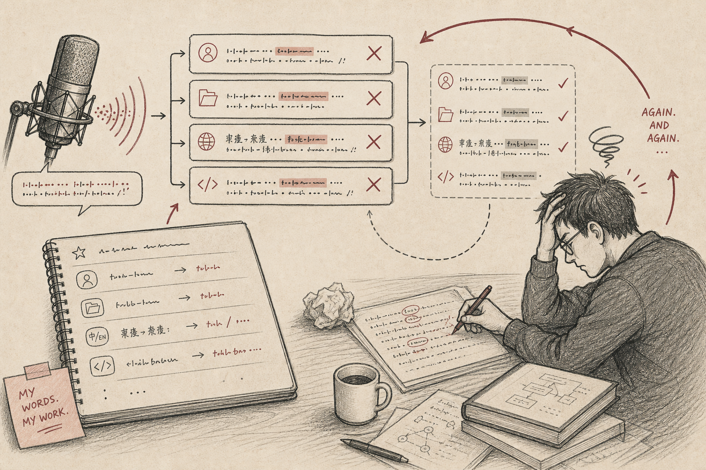
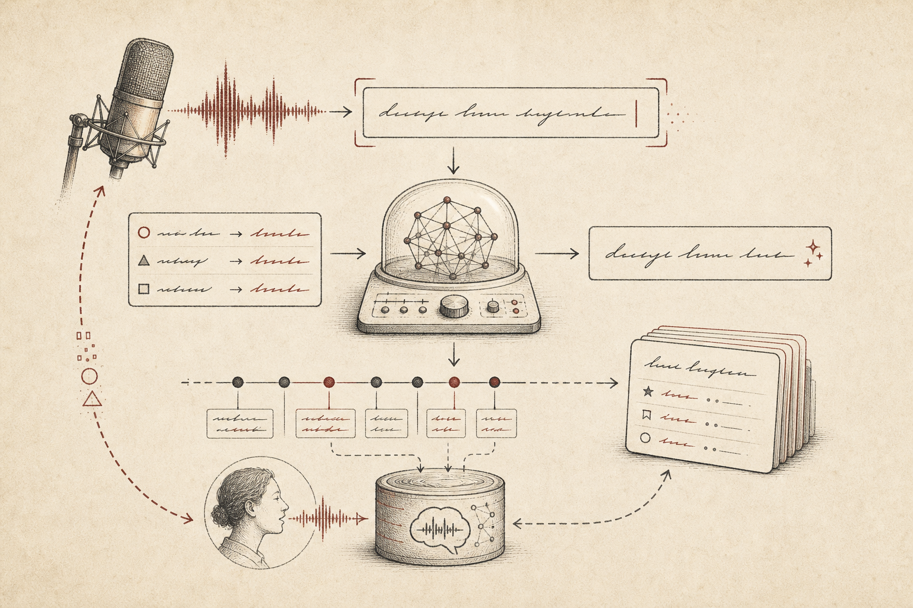
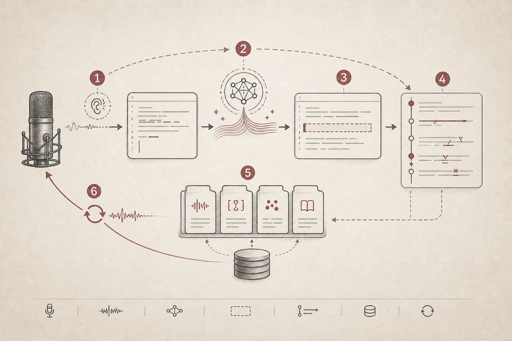

Open Typeless Harness
Correction-native voice input that learns your personal vocabulary from the edits you actually make.
TL;DR
GitHub: OpenCodexLabs/open-typeless-harness.
Open Typeless Harness starts from a simple frustration: generic speech-to-text keeps failing on the words that matter most to you. Project names, paper terms, product names, mixed Chinese-English phrases, and personal writing habits are exactly where normal dictation feels dumb.
The project asks a different question: what if voice input learned from the edits you actually make after the text lands?
The moment that makes this necessary
The pain is not that dictation makes one mistake. The pain is that it makes the same mistake tomorrow. You say a repo name, fix it. You say a paper abbreviation, fix it. You mix Chinese and English, fix it again. The system sees none of that correction history.
That means the user becomes the learning loop manually. Every correction is a tiny training signal, but ordinary voice input throws it away.

The core insight
Voice input should not be a separate writing box. It should be an input layer over the field where you already work. Speak into the current app, let the model polish the transcript, insert it into the focused field, then watch the short-window edits that follow.
Those edits are the real product signal. Stable corrections can become local speech skills. Ambiguous corrections can stay reviewable. The loop gets better without asking the user to become a prompt engineer.

| Stage | What happens | Why it matters |
|---|---|---|
| Listen | Capture speech and produce an ASR transcript. | The user can stay in the current writing context. |
| Polish | Use relevant speech skills and an LLM polish step. | Personal vocabulary can be applied before insertion. |
| Insert | Write text into the focused field. | The app behaves like an input layer, not a separate editor. |
| Learn | Watch short-window edits after insertion. | Real corrections become product feedback. |
| Adapt | Promote stable patterns into local speech skills. | The next dictation can improve without manual prompt tuning. |
The workflow
The workflow is a feedback loop: listen, polish, insert, learn, adapt. Each step is small, but together they change the product category from "speech-to-text" to correction-native input.
The important boundary is that this is still an input layer, not an autonomous agent. It should write into the field the user is using, learn from the user's edits, and keep local vocabulary under user control.

Why it matters
AI-native work is not only about agents acting on files. It is also about changing how humans express intent. Voice is high-bandwidth, but only if the system understands personal vocabulary and context-specific phrasing.
Open Typeless Harness makes voice input feel less like a one-shot transcription service and more like a local writing habit that improves with use.
When to use it
| Use it when | Be careful when |
|---|---|
| You dictate technical or mixed-language content often. | The target field contains private text you do not want monitored. |
| You repeatedly correct the same vocabulary mistakes. | You need exact legal, medical, or financial transcription. |
| You want voice input inside existing apps. | A simple keyboard shortcut is enough for the task. |
The story in one sentence
Voice input should not stop at transcription. The interesting product primitive is the correction loop: what did the user fix, which fixes repeat, and which ones should become local skills?
Open Typeless Harness turns dictation into a local learning loop built from the edits you actually make.